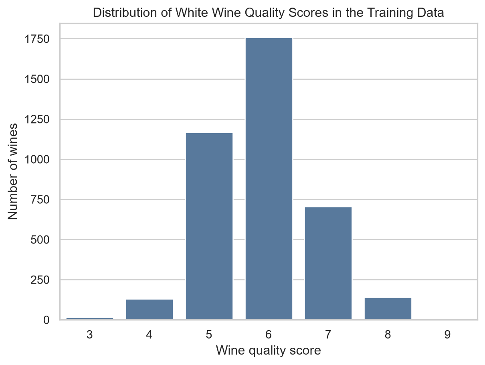

from io import BytesIO
from pathlib import Path
from zipfile import ZipFile
import pandas as pd
import requests
from sklearn.model_selection import train_test_splitPredicting White Wine Quality
Methods
Data acquisition
dataset_url = "https://archive.ics.uci.edu/static/public/186/wine+quality.zip"
raw_data_path = Path("../data/raw/winequality-white.csv")
response = requests.get(dataset_url, timeout=30)
response.raise_for_status()
with ZipFile(BytesIO(response.content)) as archive:
white_wine_file = next(
file_name
for file_name in archive.namelist()
if file_name.endswith("winequality-white.csv")
)
raw_data_path.write_bytes(archive.read(white_wine_file))Train-test split
We loaded the raw white wine data and split it into training and test sets before conducting exploratory data analysis or model fitting. We used a fixed random seed to make the split reproducible and stratified by quality score to preserve its distribution in both data sets.
wine_data = pd.read_csv(raw_data_path, sep=";")
train_data, test_data = train_test_split(
wine_data,
test_size=0.20,
random_state=522,
stratify=wine_data["quality"],
)
processed_data_path = Path("../data/processed")
train_data.to_csv(
processed_data_path / "white-wine-training-data.csv",
index=False,
)
test_data.to_csv(
processed_data_path / "white-wine-test-data.csv",
index=False,
)
print(f"Training observations: {len(train_data)}")
print(f"Test observations: {len(test_data)}")Training observations: 3918
Test observations: 980Model development and selection
We used all 11 physicochemical measurements as predictor variables. We did not perform feature selection because the objective was prediction, and variables with weak individual linear correlations may still improve multivariable or non-linear models.
We compared three regression approaches: a mean baseline model, a linear regression model, and a random forest regression model. The linear regression pipeline standardized predictor variables, whereas random forests do not require standardization. We used five-fold cross-validation on the training data to compare models using root mean squared error (RMSE), where lower values indicate better predictive performance. The test set was not used during model selection.
RMSE was the primary model-selection metric because it places greater weight on large prediction errors. We additionally reported MAE because it provides an interpretable measure of average prediction error.
from sklearn.dummy import DummyRegressor
from sklearn.ensemble import RandomForestRegressor
from sklearn.linear_model import LinearRegression
from sklearn.model_selection import KFold, cross_validate
from sklearn.pipeline import Pipeline
from sklearn.preprocessing import StandardScaler
X_train = train_data.drop(columns="quality")
y_train = train_data["quality"]
models = {
"Mean baseline": DummyRegressor(strategy="mean"),
"Linear regression": Pipeline(
[
("standardize", StandardScaler()),
("model", LinearRegression()),
]
),
"Random forest": RandomForestRegressor(
n_estimators=500,
random_state=522,
n_jobs=1,
),
}
cross_validation = KFold(
n_splits=5,
shuffle=True,
random_state=522,
)
model_scores = []
for model_name, model in models.items():
cross_validation_scores = cross_validate(
model,
X_train,
y_train,
scoring={
"RMSE": "neg_root_mean_squared_error",
"MAE": "neg_mean_absolute_error",
},
cv=cross_validation,
n_jobs=1,
)
rmse_scores = -cross_validation_scores["test_RMSE"]
mae_scores = -cross_validation_scores["test_MAE"]
model_scores.append(
{
"Model": model_name,
"Mean cross-validated RMSE": rmse_scores.mean(),
"Standard deviation of RMSE": rmse_scores.std(),
"Mean cross-validated MAE": mae_scores.mean(),
"Standard deviation of MAE": mae_scores.std(),
}
)
model_comparison = (
pd.DataFrame(model_scores)
.sort_values("Mean cross-validated RMSE")
.reset_index(drop=True)
)Results
Training data overview
To assess the quality of the training data, we examined its size, number of predictor variables, missing values, and exact duplicate rows.
training_overview = pd.DataFrame(
{
"Number of observations": [len(train_data)],
"Number of predictor variables": [train_data.shape[1] - 1],
"Missing values": [train_data.isna().sum().sum()],
"Duplicate rows": [train_data.duplicated().sum()],
}
)
training_overview| Number of observations | Number of predictor variables | Missing values | Duplicate rows | |
|---|---|---|---|---|
| 0 | 3918 | 11 | 0 | 609 |
Table 1. Training data overview.
The training data contain 3,918 wine observations and 11 predictor variables. No missing values were identified. We found 609 exact duplicate rows. Because the data set does not include a wine identifier or documentation indicating that repeated measurements are errors, we retained these observations for the analysis.
Distribution of wine quality scores
We then examined the distribution of the target variable, wine quality score, using the training data only.
quality_counts = (
train_data["quality"]
.value_counts()
.sort_index()
.rename_axis("Quality score")
.reset_index(name="Number of wines")
)
quality_counts| Quality score | Number of wines | |
|---|---|---|
| 0 | 3 | 16 |
| 1 | 4 | 130 |
| 2 | 5 | 1166 |
| 3 | 6 | 1758 |
| 4 | 7 | 704 |
| 5 | 8 | 140 |
| 6 | 9 | 4 |
Table 2. Distribution of wine quality scores in the training data.
Most wines received quality scores of 5, 6, or 7. In particular, score 6 was the most common rating, with 1,758 observations, whereas scores 3 and 9 were rare, with 16 and 4 observations, respectively.
import matplotlib.pyplot as plt
import seaborn as sns
sns.set_theme(style="whitegrid")
ax = sns.countplot(
data=train_data,
x="quality",
color="#4C78A8",
)
ax.set(
title="Distribution of White Wine Quality Scores in the Training Data",
xlabel="Wine quality score",
ylabel="Number of wines",
)
plt.show()
Figure 1. Distribution of white wine quality scores in the training data.
Figure 1 shows that the target distribution is concentrated around mid-range scores. This imbalance means that predictions for very low- and very high-quality wines may be less reliable because few examples of these scores are available for model training.
Relationships between physicochemical properties and quality
We calculated Pearson correlations between each physicochemical predictor and wine quality score using the training data. These correlations describe linear associations only and do not establish causal relationships.
correlations = (
train_data
.corr(numeric_only=True)["quality"]
.drop("quality")
.sort_values()
)
correlation_table = correlations.rename(
"Pearson correlation with quality"
).reset_index()
correlation_table.columns = [
"Predictor",
"Pearson correlation with quality",
]
correlation_table| Predictor | Pearson correlation with quality | |
|---|---|---|
| 0 | density | -0.306091 |
| 1 | volatile acidity | -0.214085 |
| 2 | chlorides | -0.205568 |
| 3 | total sulfur dioxide | -0.159257 |
| 4 | fixed acidity | -0.111097 |
| 5 | residual sugar | -0.097235 |
| 6 | citric acid | -0.001029 |
| 7 | free sulfur dioxide | 0.030225 |
| 8 | sulphates | 0.065129 |
| 9 | pH | 0.108349 |
| 10 | alcohol | 0.423240 |
Table 3. Pearson correlations between physicochemical predictors and wine quality score in the training data.
plt.figure(figsize=(9, 6))
ax = sns.barplot(
data=correlation_table,
x="Pearson correlation with quality",
y="Predictor",
color="#4C78A8",
)
ax.axvline(0, color="black", linewidth=1)
ax.set(
title="Correlations Between Predictors and Wine Quality",
xlabel="Pearson correlation with quality score",
ylabel="Physicochemical property",
)
plt.show()
Figure 2. Pearson correlations between physicochemical predictors and wine quality score in the training data.
Alcohol had the strongest positive linear association with wine quality score (\(r = 0.423\)). Density had the strongest negative association (\(r = -0.306\)). Volatile acidity (\(r = -0.214\)) and chlorides (\(r = -0.206\)) also showed negative associations with quality. In contrast, citric acid had almost no linear association with quality (\(r = -0.001\)).
Overall, the correlations are moderate or weak, suggesting that no single physicochemical property is sufficient to predict wine quality accurately. We therefore retained all available predictors for the multivariable regression models. These correlations describe associations rather than causal effects.
Model comparison
We compared the models using five-fold cross-validation on the training data. Table 4 reports the mean RMSE across folds; lower RMSE indicates better predictive performance.
model_comparison| Model | Mean cross-validated RMSE | Standard deviation of RMSE | Mean cross-validated MAE | Standard deviation of MAE | |
|---|---|---|---|---|---|
| 0 | Random forest | 0.626218 | 0.017673 | 0.453419 | 0.007577 |
| 1 | Linear regression | 0.750444 | 0.020613 | 0.586087 | 0.013979 |
| 2 | Mean baseline | 0.885393 | 0.016735 | 0.670817 | 0.011959 |
Table 4. Five-fold cross-validated RMSE for the candidate regression models.
Random forest achieved the lowest mean cross-validated RMSE (0.626), followed by linear regression (0.750) and the mean baseline model (0.885). The RMSE standard deviations were small for all three models, indicating that their performance was relatively consistent across cross-validation folds. We therefore selected the random forest model for final evaluation on the held-out test data.